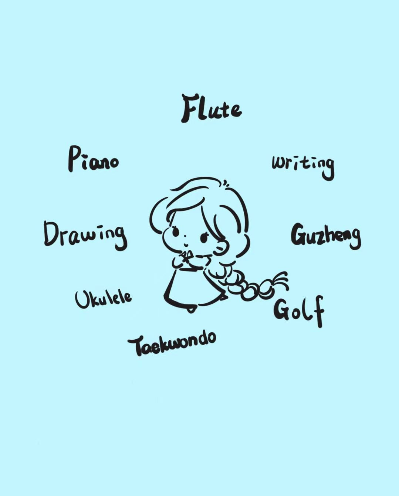
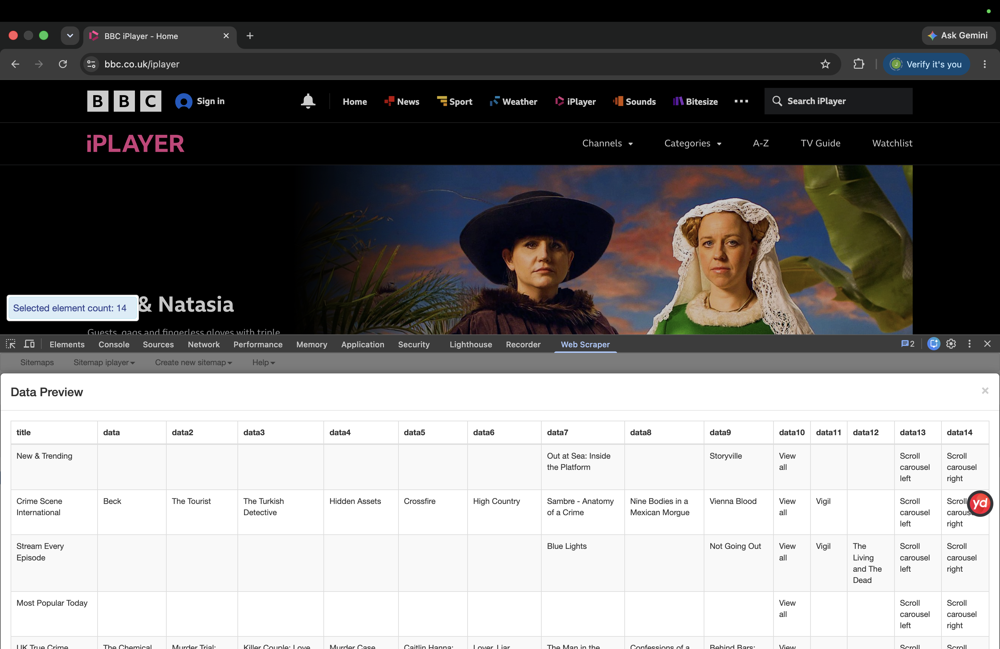
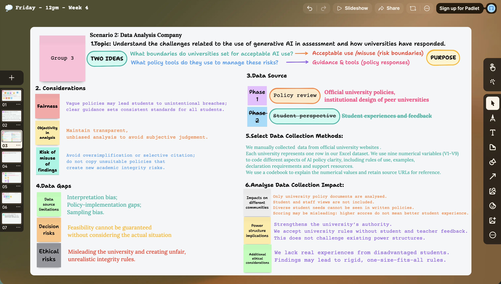
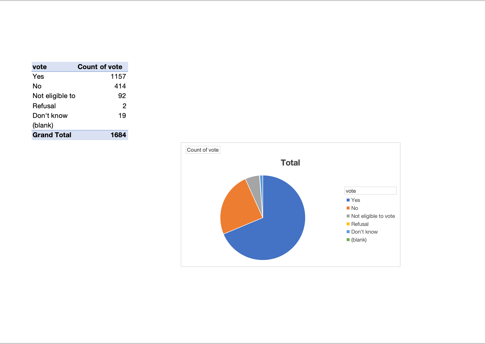

Art & Design
Exploring visual ideas, illustration and creative expression.
✦ WELCOME ✦
Digital Media student, creative thinker and lover of art, design and visual culture.
EXPLORE ↓DESIGN · CREATE · REFLECT

01 / ABOUT ME
I am a Digital Media student at the University of Leeds. My background is in design, and I am interested in visual culture and creative expression.
I enjoy exploring creative ideas and finding ways to combine creativity with digital media.
DESIGNER · CREATIVE THINKER

02 / MY INTERESTS
Inspirations that shape my creative practice.
Exploring visual ideas, illustration and creative expression.
Music, artists and the feelings and stories behind songs.
Style, colour and fashion as a way to show personality.
Exploring new places, cultures and small wonderful moments.
03 / WEEKLY REFLECTIONS
Notes, thoughts and reflections from my Digital Media workshops.
In Week 1's lecture, we were introduced to the core ideas of digital practices. We discussed what digital media study means and what we will explore across this module. This session helped me understand the aims of the course before I began building my portfolio website.
The lecture opened the question of how we study digital culture. It encouraged me to look beyond tools and think about how people interact, create meaning and connect online. This changed how I see everyday digital spaces, not only as simple platforms for communication.
Before this session, I only thought social media and websites were simple places to share information. Now I understand they are spaces shaped by human behaviour and social choices.
This week's workshop focused on creating and deploying a portfolio website with GitHub Pages. I learned the basics of HTML structure and how to host a live website online.
The Week 2 lecture explored digital networks, infrastructure, platforms and algorithms. Building my own site helped me understand practically that every website depends on online infrastructure, and platforms control what content becomes visible.
This task made me notice that small design decisions change how visitors experience a site. I now understand that platforms quietly shape what we can see and publish online.
This week, I started exploring web scraping and experimented with scraping tools to collect and search information from web pages. It was fascinating to automatically gather data online, and I began to understand both the useful potential and ethical issues around scraping.
This practical task showed me how creative work and technical skills connect in digital media. I found the topic engaging, and it made me want to learn more about online data collection and analysis.
I am eager to keep exploring web scraping, online datasets and how we can examine patterns hidden inside web data.

WEEK 03 · Web scraping exploration
In week four, we worked in groups to build our own dataset. Our group chose to collect and compare university policies about generative AI use for student assessment. We found, selected and extracted text from official university guidance documents.
This task taught me that datasets are not neutral facts. Every choice of what to collect, what to leave out and how to categorise information creates bias. Even official policy documents represent only one point of view.
I learned that making a dataset is a creative and interpretive process, not just copying information from websites. It requires clear rules for coding and consistent decision-making as a team.

WEEK 04 · Building our AI policy dataset
In class, we shared our observations from the Week 4 dataset work. I hoped to compare different universities’ generative AI assessment policies through the dataset. We managed to organise and code the policy documents successfully, yet our findings only reflected formal written rules rather than users’ real experiences, meaning we were only partially successful.
We only collected publicly available text from university official websites, leaving out the voices of students and teaching staff. If I had more time and resources, I would run a second phase of research to gather student perspectives, including their experiences and feedback. Combining student interviews and surveys with the existing policy data would give a fuller picture of how these policies operate in practice.
After this group reflection, we learned about data visualisation using Excel this week. I found that visualisation is not merely a tool for presenting final outcomes; it can also act as a research method to uncover hidden patterns within raw data.

WEEK 05 · Excel data visualisation work